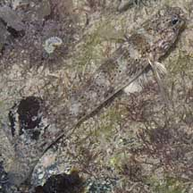
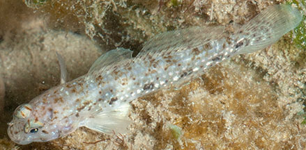

|
|
| fishes text index | photo index |
| Phylum Chordata > Subphylum Vertebrate > fishes > Family Gobiidae |
| Black-spotted
lagoon-goby Istigobius goldmanni* Family Gobiidae updated Sep 2020 Where seen? This pretty slender goby is seen on many of our shores, near reefs and rubble. Features: To about 5cm. Body long slender, pale sandy-white with many small black spots on the nape. Distinguished by a row of pairs of close-set round black spots along the side of the body. Sometimes mistaken for the Ornate lagoon-goby which has 'dashed' lines on the sides of the body instead of pairs of spots. |
 Tanah Merah Ferry Terminal, Jul 09 |
 Pairs of close-set round black spots along the side of the body. Tanah Merah, Jul 09 |
*Species are difficult to positively identify without close examination.
On this website, they are grouped by external features for convenience of display.
| Black-spotted lagoon-gobies on Singapore shores |
On wildsingapore
flickr
|
| Other sightings on Singapore shores |
Links
References
|